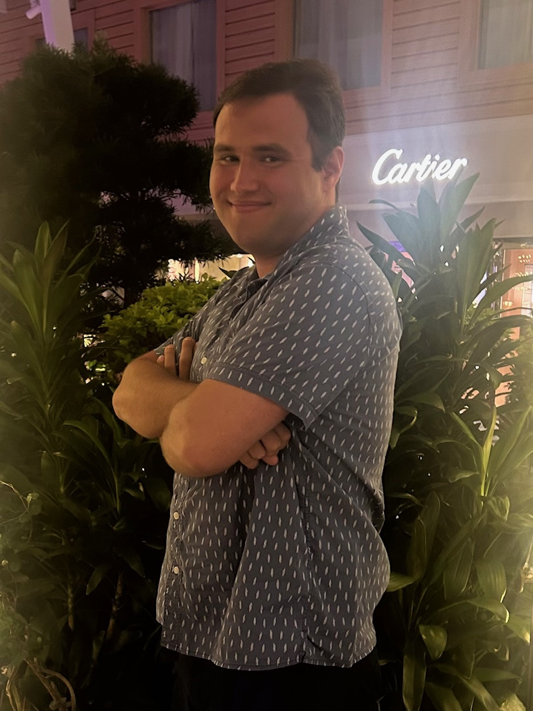

My name is Philip Przekora. I am a senior majoring in computer science at
Oakland University in
Auburn Hills, Michigan, expected to graduate in May.
I have always been interested in computers
but particularly took an interest
in programming when I was high school. My current experience
ranges from
programming basic applications to course projects where I have assisted in various
parts of the software development cycle. Through my courses I have gained hands
on experience
with Java, C, HTML, CSS, JavaScript, and MySQL. My goal is to
become either a sofware or web
developer where I hope to apply my creativity and
technical skills while also learning and growing
through my work. I am very excited
to share my experience and skills with you on this site.
Feel free to
view my resume or
learn more about me here.
About Philip

"I want freedom for the full expression of my personality."
-Mahatma Gandhi
-Mahatma Gandhi